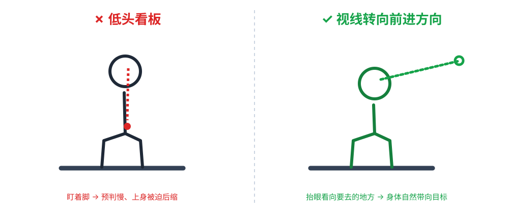

05·教学要点
教学要点cue应用层
教学要点与 cue 话术
教练的"真功夫"在把复杂的动作翻译成学员一听就懂、一带就会的 cue。本文汇集通用教学要点与可直接使用的 cue，供备课与课堂参考。
cue = 一句话口令/比喻，负责把"动作要怎么做"凝练成可执行、可回忆的提示。
1. 教学五要点（Golden Rules）
- 示范 > 讲解：先做、再解释用词，尽量"演示一遍"。
- 一次一个焦点：纠错一次挑最重要的，其余放过，避免信息过载。
- 用"学员的语言"讲：cue 越短、越形象越好（"像大树"、"像坐椅子"）。
- 给出立即反馈与肯定：做对了立刻反馈（正强化），比"指出错"更有效。
- 把控制感交还学员：解释"为什么"，让学员明白而不是机械服从。
关键：示范要用"正面 + 侧面"两个角度各做一遍，再让学员站在能看清你动作的位置试做；cue 只是"提醒开关"，真正让动作"落地"的是跟随示范 + 及时反馈。
图文示例｜教练面向前 + 侧向示范，便于学员看清变化链：

图片来源：Wikimedia Commons（自由授权）· 查看原图
{kind=link}
2. cue 库（分类、可摘用）
姿态/重心
- 「保持运动员站姿，膝关节持续微屈。」「质心放于板面，不以腰部后倾代偿。」
- 「目视行进方向，背部自然立直。」「避免低头盯刃。」
示意图：视线 —— 低头看刃（错误） vs 抬眼看前进方向（正确）

平衡/滑行
- 直滑/落叶：「质心居中，保持上下方向稳定。」「贴合板面，刃侧随雪面滑移。」
转弯/换刃
- 「视线先行引入弯内，板体随之跟入。」「以脚跟刃为主导，脚踝跟随配合引导转向。」
- 「持续压刃入雪面，使身体质心沉向刃侧加压。」
控速/刹车
- 「优先掌握停车。」「以刃拖地控制速度，避免出弯后失速。」「控速主要依靠刃压力度调节，不依赖急停。」
自由式
- 「落地屈膝缓冲。」「上板轻稳、过板稳、出板平缓。」（道具）
- 「先压缩储能，再起跳爆发。」（腾空/跳台）
3. 有效 cue 的写法（给教练自己）
- 简短（一句）。
- 具体（动词 + 对象，不说模糊的"要认真"）。
- 可行动（讲清 what to do，常以部位/动作 + 方向）。
- 正说优先（强调"该做什么"，少说"别做什么"）。
- 配合示范，关键 cue 当场反复强调 2~3 次。
反面示范
- ❌「你再认真一点」「注意平衡」（过于笼统）
- ✅「屈膝放松，将重心移至前脚」
4. 教练课堂语言的好例子
| 情形 | 实用 cue（规范表述） |
|---|---|
| 学员重心后仰 | 「稍作调整，将重心转移至前脚」 |
| 转弯时低头 | 「目视弯道终点方向，避免盯视脚面」 |
| 刹不住冲 | 「利用刃刃口产生阻力逐步减速」（如缓捏刹车） |
| 空中 | 「收拢小腿、目视落地，先使身体缓冲再站直」 |
5. 教练成长：练习方法
- 把每个 cue 记录在本知识库 cue 卡 中梳理、迭代。
- 通过录像回看，分析 cue 是否频繁、是否在关键处发挥作用。
- cue 是"装备"，需反复练习直至脱口而出。
相关
- 教学顺序 learning-sequence、错误纠正 error-correction
- 工具：cue 卡、教案模板